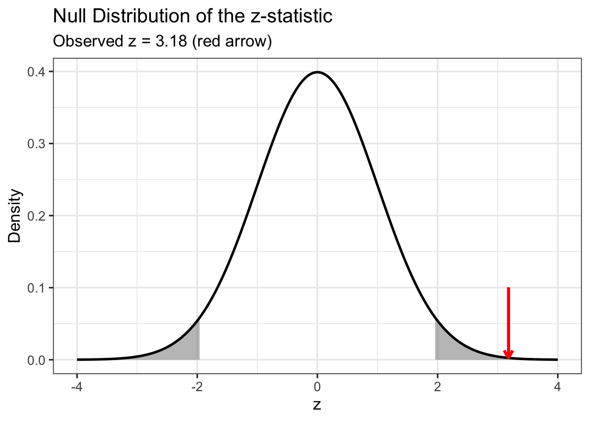

QUIZ - Hypothesis testing
Activity 3: Hypothesis Testing
Introduction
Welcome to Activity 3: Hypothesis Testing
In this activity, we introduce the concept of null hypothesis testing. Hypothesis tests help us make sense of data by providing a structured way to decide whether the patterns we observe are likely to be genuine or could simply have occurred by chance.
In MMS studies, we often use hypothesis testing to answer concrete, real-world questions such as:
- Has the prevalence of drug resistance mutations increased over the past five years?
- Are particular genetic variants associated with factors such as gender or occupation?
- Does treatment efficacy differ depending on the parasite’s genetic profile?
Each of these questions can be expressed as a null hypothesis — a statement that there is no difference or no association — which we then evaluate using data. Understanding this framework allows us to design studies that provide stronger, evidence-based conclusions.
Learning Outcomes
By the end of this tutorial, you will be able to:
- Define key terms related to null hypothesis testing.
- Calculate a test statistic from sample data, and compare it against a null distribution.
- Decide whether or not to reject the null hypothesis based on a p-value.
Disclaimer: The scenarios in this document are entirely fictitious. While real place names are used, the data itself is artificial and designed for teaching purposes only. It does not necessarily represent the real epidemiological situation in these locations.
Intro quiz on hypothesis testing
Well done on completing this quiz! We will now put some of these ideas into practice.
Testing Whether a Resistance Mutation Exceeds a Threshold
Background
You are a molecular surveillance scientist working with a local research team in Mtwara, a coastal region in southern Tanzania. In recent years, reports from neighbouring districts have hinted at a possible rise in sulfadoxine–pyrimethamine (SP) resistance. To assess the situation locally, your team has genotyped samples collected from malaria-positive patients attending health facilities in Mtwara town.
You are particularly interested in the A437G mutation in the dhps gene, a well-established marker of SP resistance. You decide to test whether the prevalence of this mutation in Mtwara exceeds 5% - a threshold that may indicate cause for clinical concern.
Your question is straightforward: Is the prevalence of the dhps A437G mutation in Mtwara greater than 5%? You will answer this by conducting a formal hypothesis test.
Framing the Question
Your survey in Mtwara was recently completed. Out of 1,000 participants tested for malaria, 320 were confirmed positive by rapid diagnostic test (RDT). Of these, 300 samples were successfully sequenced, and 27 were found to carry the dhps A437G mutation.
QUIZ - Setting Up the Hypothesis
Choosing an Appropriate Test
Before we can calculate anything, we need to decide which type of statistical test is appropriate for our question. Different tests are used depending on:
- What kind of data we have (e.g. proportions, means, counts), and
- What kind of comparison we want to make (e.g. one group vs. a reference value, or multiple groups vs. each other).
Below are some common tests you may encounter in MMS:
One-sample z-test
Used when comparing an observed proportion or mean to a single fixed value.
Null hypothesis: the population proportion (or mean) is equal to the reference value.
Chi-squared test
Used for categorical data to test for an association between two variables.
Null hypothesis: there is no association between the variables (they are independent).
t-test
Used when comparing means between two groups for continuous data.
Null hypothesis: the population means of the two groups are equal.
ANOVA (Analysis of Variance)
Used to compare means across three or more groups.
Null hypothesis: all group means are equal.
QUIZ – Choosing the Appropriate Test
Calculating the Test Statistic
Now that we’ve chosen a test, the next step is to calculate the test statistic. This value tells us how far our observed result is from what we would expect if the null hypothesis were true.
For a one-sample z-test on a proportion, the formula is:
[ z = ]
where:
- () = observed sample proportion
- (p_0) = null (expected) proportion
- (n) = sample size
Fill in the blanks below to calculate the z-statistic for the Mtwara data.
# Observed and expected values
p <- 27 / 300
p_thresh <- 0.05
n <- 300
# Fill in the missing parts of the formula
z <- (? - ?) / sqrt(? * (1 - ?) / ?)
z# Observed and expected values
p <- 27 / 300
p_thresh <- 0.05
n <- 300
# Fill in the missing parts of the formula
z <- (p - p_thresh) / sqrt(p_thresh * (1 - p_thresh) / n)
zClick to see the answer
You should get z = 3.179.
QUIZ – Understanding the Test Statistic
From the Test Statistic to the p-value
So far, we’ve calculated the z-statistic — a number that tells us how far our observed prevalence (9%) is from the null value (5%).
But how large is “large”? To answer that, we need to compare our test statistic to what we’d expect if the null hypothesis were true. This is done using the null distribution.
Under the null hypothesis, the z-statistic follows a standard normal distribution, centred at zero:

The grey shaded areas show the 5% of most unusual results (2.5% on either side) that we would expect if the null hypothesis were true.
Our observed z-statistic is marked by the red arrow. If this value falls inside one of the shaded regions, it means that such an extreme result would be very unlikely under the null hypothesis.
We can express this using a p-value, which tells us the exact probability of seeing a result at least as extreme as this one, assuming the null hypothesis is true. A smaller p-value means a rarer, more unusual result.
Run the following code to carry out this statistical test. Can you find the p-value in the output?
# Conduct one-sample z-test
prop.test(x = 27, n = 300, p = 0.05, correct = FALSE)Click to see the answer
You should get a p-value of 0.001478
This means that if the true prevalence were exactly 5%, we would expect to see a result this extreme (or more extreme) only about 0.15% of the time. That’s very unlikely, giving us strong evidence that the true prevalence differs from 5%. In our case the observed prevalence was 9%, meaning we have strong evidence the prevalence is higher than the threshold.
QUIZ – Understanding the p-value
Communicating the Results
Now that we’ve completed the hypothesis test, let’s summarise what we’ve found and how to communicate it clearly.
We started with a simple question: Is the prevalence of the dhps A437G mutation in Mtwara greater than 5%?
From our data, we calculated:
- Observed prevalence: 9% (27 out of 300)
- Observed z-statistic: 3.179
- Corresponding p-value: 0.001478
Because the p-value is much smaller than 0.05, we reject the null hypothesis that the true prevalence is equal to 5%. Because our observed prevalence (9%) is higher than this value, we conclude the prevalence is different in the positive direction - i.e. the prevalence is greater than 5%.
When reporting results like this, it’s important to be clear and transparent about both the statistical and practical meaning. A good summary might look something like this:
Prevalence of the dhps A437G mutation in Mtwara town was estimated at 9.0% (27 / 300). A one-sample z-test comparing this against a 5% threshold provided strong evidence that the true prevalence exceeds 5% (z = 3.18, p = 0.0015).
REFLECTION – Thinking Beyond the Numbers